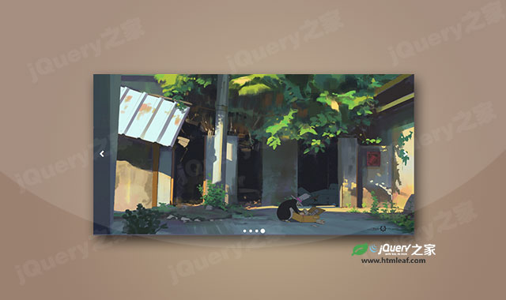

兼容IE8的高级jQuery轮播图插件
jSlider is an advanced jQuery Slider Plugin
jQuery之家
返回下载页
Event log
External control
Cancel autoplay!
Go to previous slide
Go to next slide
Go to slide #3 (index: 2)
(the first slide index is 0.)
More demos / examples of jSlider:
Welcome slider
Edge to Edge (Full Width) slider
Background slider
Gallery slider
Slider with animated content (with custom active slide)
Multiple sliders
Slider interaction
Use Javascript to create slider
如果你喜欢这个插件，那么你可能也喜欢:
仿Google+简洁jQuery轮播图插件

简单的jQuery响应式轮播图插件